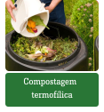
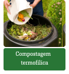

Quem somos?
Nós somos uma equipe de estudantes do Senac PA , pelo projeto integrador com o tema de compostagem. Juntos, estamos comprometidos em encontrar soluções simples e eficazes para promover um ambiente mais saudável e consciente.
Porque Compostagem?
A compostagem, conhecida como o processo de reciclagem do lixo orgânico, transforma a matéria orgânica encontrada no lixo em adubo natural, que pode ser usado na agricultura, em jardins e plantas, substituindo o uso de produtos químicos. O processo também contribui para a redução do aquecimento global, traz muitas vantagens para o meio ambiente e para a saúde pública, seja aplicada no ambiente urbano (domésticos ou industriais) ou rural.
Tipo de Compostagem:
 
